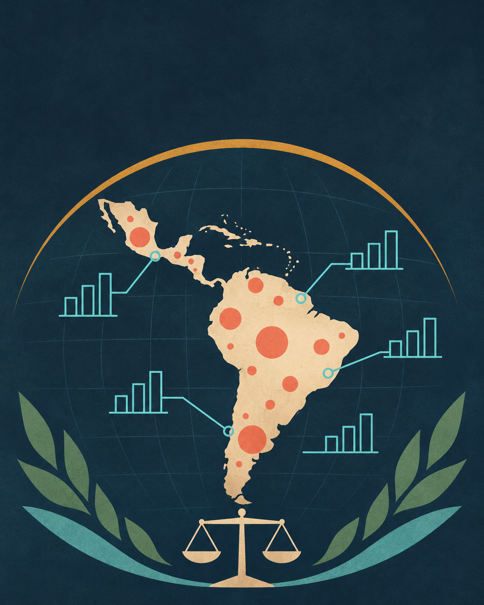

ECLAC records at least 3,386 femicides across 27 countries and territories
The regional observatory’s official 2025 measure separates recorded femicides from attempted or frustrated cases and does not support the conflicting 24-per-day claim.

What We Know
ECLAC’s Gender Equality Observatory reports at least 3,386 femicides across 27 Latin American and Caribbean countries and territories in 2025. The figure is the observatory’s regional measure and remains attributed to its bulletin.
Keep the measures separate
The bulletin also reports attempted or frustrated cases for 10 countries. Those cases are not added to the 3,386 figure, and the story does not convert the regional measure into a daily rate.
Why It Matters
Regional comparisons can clarify scale only when definitions, coverage and reporting periods remain visible. Separating completed and attempted or frustrated cases reduces the risk of turning unlike measures into a single headline number.
What We’re Watching
Country-level updates, changes in national definitions, coverage gaps and the next ECLAC release that may revise or extend the regional series.